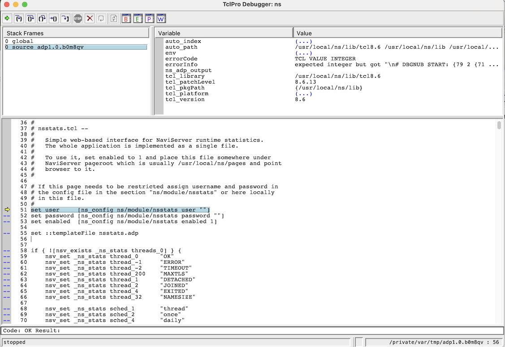

NaviServer Built-in Commands – 5.0.4
ns_adp_debug - Connect to the TclPro Debugger if not already connected
The ns_adp_debug command integrates NaviServer with the TclPro Debugger, a graphical debugging tool for Tcl code. It allows you to connect to a running debugger process and step through code, inspect variables, and examine the call stack. By default, it uses information from the current request to determine the debugger host if not explicitly provided, and defaults to port 2576 unless otherwise specified.
You can use ns_adp_debug to:
Connect to a remote TclPro Debugger instance running on a specified host and port
Inspect the call stack and local variables at breakpoints
Step through Tcl procedures. This process requires instrumentation, which can be enabled via command-line parameters or through the TclPro Debugger GUI ("View->Procedures...").
Connects to a running TclPro Debugger process. By default, if host is not provided, ns_adp_debug uses the Host header field from the incoming request. If the debugger is running on a port different to the default 2576, you must specify the -port option. If -procs is provided, it should be a glob-style pattern indicating which Tcl procedures to automatically instrument for debugging.
Below is an example of using the TclPro Debugger to debug the start page of the nsstats module.

The TclPro Debugger was originally developed as a commercial product by Scriptics. After Scriptics was renamed to Ajuba and was later acquired by Interwoven, the development moved to ActiveState as part of the TclDevKit tool suite. When ActiveState discontinued TclDevKit, the TclPro Debugger sources were released as open source. Currently, multiple open-source variants exist:
Open-sourced TDK from ActiveState: https://github.com/activestate/tdk
FlightAware fork, upgraded from TclPro Debugger 1.5 to version 2.0: https://github.com/flightaware/TclProDebug
A fork of the FlightAware version, updated to version 3.0, supporting the Microsoft Debug Adapter Protocol (usable with Vimspector, Visual Studio, etc.): https://github.com/puremourning/TclProDebug
A fork of the FlightAware version (2.0) adapted for Tcl 9: https://github.com/apnadkarni/TclProDebug
The TclPro Debugger is a Tk-based GUI application that communicates with NaviServer over a network socket. You can run the debugger on a separate machine from the server, provided you have appropriate network access and a means to display the GUI (e.g., X forwarding or remote desktop).
The steps below demonstrate how to install Tcl, Tk, and TclProDebug from source into a dedicated directory, avoiding interference with system-wide installations. The example uses Tcl 9 on a Unix-like system, based on the last of the mentioned variants. You may adapt these instructions for Tcl 8.6 or different paths as needed.
First, define the paths for the source and installation directories, assuming Tcl, Tk, and TclProDebug are downloaded to the specified locations.
INSTALL_DIR=/usr/local/ns9 # Uncomment TKFLAG if compiling under macOS with Aqua support #TKFLAG=--enable-aqua TCL_SRC=/usr/local/src/tcl9.0.0 TK_SRC=/usr/local/src/tk9.0.0 TCLDB_SRC=/usr/local/src/TclProDebug
Install Tcl9:
(cd ${TCL_SRC}/unix && ./configure --prefix=${INSTALL_DIR} --with-tcl=${INSTALL_DIR}/lib/ && sudo make install)
Install Tk9:
(cd ${TK_SRC}/unix && ./configure --prefix=${INSTALL_DIR} --with-tcl=${INSTALL_DIR}/lib/ ${TKFLAG} && sudo make install)
Install the Tcl parser from TclPro Debugger:
cd ${TCLDB_SRC}
(cd lib/tclparser/ && autoreconf && ./configure --prefix=${INSTALL_DIR} --with-tcl=${INSTALL_DIR}/lib && sudo make install)
Make the remote debugging adapter available to NaviServer by linking it into NaviServer’s tcl directory (assuming NaviServer and the debugger run on the same machine):
ln -s ${TCLDB_SRC}/lib/remotedebug/initdebug.tcl ${INSTALL_DIR}/tcl/
Start the TclPro Debugger GUI (here using wish from the Tk 9 installation):
${INSTALL_DIR}/bin/wish9.0 bin/prodebug
In the TclPro Debugger GUI:
File -> New Project
Select "Remote Debugging"
Leave Port 2576 (default)
File -> Save Project As...
NaviServer supports two primary modes for debugging ADP pages:
Full-page Debugging: In this mode, a full page can be debugged.
Enable ADP debugging in the NaviServer configuration file for the server configuration.
ns_section ns/server/$server/adp {
...
ns_param enabledebug true ;# default: false
...
}
To debug a page, append a debug query variable to the page’s URL. For example:
http://...../foo.adp?debug=*
The wildcard pattern matches the file to be debugged (useful for complex ADP includes). Additional query parameters like dprocs, dhost, and dport can override defaults for procedure patterns, debugger host, and port, respectively.
Note: Full-page debugging is recommended only for development environments not accessible from the public Internet, as it can expose source code and internal variable states to any client requesting the debug parameter.
Debugging via Breakpoints: If you prefer not to enable full-page debugging, insert ns_adp_debug calls in your code at specific points to initiate a debugger connection. This method does not require changes to the NaviServer configuration. If needed, you can specify host, port, and procs arguments just as in full-page debugging mode. All parameters are optional.
By default, the host is derived from the request’s Host header field. If you need a different host or a nondefault port, specify them in the ns_adp_debug call or via query parameters.
The TclPro Debugger was designed primarily for debugging plain Tcl scripts. While it works reasonably well for basic debugging needs for NaviServer and ADP pages, there are certain limitations when dealing with large frameworks or complex code bases. For instance, stepping through code relies on instrumentation that serializes and re-sources the procedures. This approach may be adequate for small applications but can become cumbersome for larger frameworks (e.g., OpenACS) that define procedures via ad_proc, employ object-oriented extensions, or similar. Instrumentalization is currently limited to Tcl procedures.